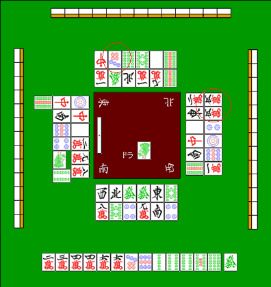

关于筋（1）
立直出现后，最需要警戒的和牌形，首先就是两面听。
只要对手不是刚学会打麻将的新手，手里如果原本是坎张、边张、对子，后来能变化成两面听，通常都会接受这种更好的变化。
也就是说，坎张、边张、双碰这些较差听牌，很多时候会继续等改良，甚至即使已经听牌，也不一定会立直。
因此，立直的听牌里两面听占比很高。常见说法是：立直里大约有三分之二是两面听。
而为了尽量不放铳给两面听，就必须理解“筋”这个概念。
六种筋
先把两面听的所有基本形列出来：

 ... 1-4 听
... 1-4 听

 ... 2-5 听
... 2-5 听

 ... 3-6 听
... 3-6 听

 ... 4-7 听
... 4-7 听

 ... 5-8 听
... 5-8 听

 ... 6-9 听
... 6-9 听
两面听的基本形就这六种，必须直接记住。因为它们都是隔三对应，背下来并不难。
三个分组
再看上面六种听牌，会发现：
1-4和4-7都包含42-5和5-8都包含53-6和6-9都包含6
再联系三面听，就更容易理解了：


 ... 1-4-7 听
... 1-4-7 听


 ... 2-5-8 听
... 2-5-8 听


 ... 3-6-9 听
... 3-6-9 听
也就是说，六种筋实际上可以归成三组：
1-4-7
2-5-8
3-6-9
这三组筋是麻将里非常基础的防守常识，必须熟悉。
从筋能看出什么
筋之所以有意义，建立在两个前提上：
- 如果对手已经打出自己的和牌牌，那他处于振听状态，不能荣和那张牌。
- 两面听只有六种基本形，也就是
1-4 / 2-5 / 3-6 / 4-7 / 5-8 / 6-9。
把这两点结合起来，就能推导出：有些牌即使不是绝对安全，也不会点进两面听。

还是看这个例子。
对门在立直后打过  ，下家则在立直后打过
，下家则在立直后打过  。
。
他们这么打，正是因为这些牌是“筋”，相对安全。
立直的东家已经打出过  ，那么就不可能是
，那么就不可能是 
 的两面听；就算真是这个形，也会因为打过和牌牌而振听。
的两面听；就算真是这个形，也会因为打过和牌牌而振听。
所以打出  ，至少不会放铳给两面听。
，至少不会放铳给两面听。
再看  。
。
这张牌可以由  和
和  两头反推出来，所以它也是筋牌。
两头反推出来，所以它也是筋牌。
 理论上可能点进两种两面听：
理论上可能点进两种两面听：

 的两面
的两面
 的两面
的两面
但东家已经打出过  和
和  ，无论是哪一种两面形，都会振听。
，无论是哪一种两面形，都会振听。
因此， 也可以视为一张相对安全的牌。
也可以视为一张相对安全的牌。